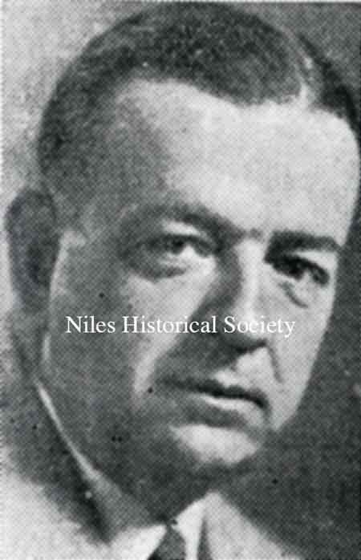

Ward-Thomas Museum


Mayors of Niles Ohio
Ward — Thomas
Museum
Home of the Niles Historical Society
503 Brown Street Niles, Ohio 44446
Click here to become a Niles Historical Society Member or to renew your membership
Click on any photograph to view a larger image, click on image again to zoom into photograph.
|
|
Mayors
of Niles Ohio. Since a man named H.H.Mason was elected the first mayor of Niles in 1866, 30 men have served in the city’s highest office. When Niles was no more than a small village, mayors were elected to one-year terms. Later, terms were increased to two years and not long ago they were increased to the present four years. Each of these mayors made contributions of one type or another to the city and aided in its growth. Some are better known than others, but each has earned a place in the history of the city. Others serving in the office were W.F. Thomas from 1904 to 1908; Edwin Hall from 1902 to 1904; E. Boynton, from 1900 to 1902; Leonard Holloway from 1896 to 1900. Holloway’s terms were characterized as “strict, precise and conscientious.” Other early mayors were D.J. Woodford, and William Davis. Davis was mayor when Niles was incorporated as a city in 1884. He served for 18 years, longer than any other mayor. The earliest mayors were J.B. Noble(1867),
John Ohl(1868), F. Casper(1869),
|
|
|
|
||
William Davis (1876-1894) William Davis was mayor of Niles for 18 years, from 1876-1894. It was during his last term of office that the village incorporated as a city of the second class. PO1.1095 |
Leonard Holloway (1896-1900) |
D.J. Woodford (1894) |
| |
||
|
John Naylor (1908-1914) John Naylor(1908-1914) known as “Honest John” served for six years. He increased the size of the police force and instituted a motorcycle patrol unit. He also adopted civil service hiring of city employees. Naylor was killed in an industrial accident after leaving office. |
On the front of the picture they are identified from left to right:
|
F.E. Bryan (1914-1916) Before 1916, F.E. Bryan(1914-1916) |
| |
||
Charles Crow (1916-1924) |
Charles Crow served as mayor from 1916 to 1924, the second longest amount of service. Crow was a minor league baseball player and arrived in Niles on a freight train. He owned the Niles Shoe Store for many years and during his years in office saw the dedication of the McKinley Memorial and Library. His service was characterized as being “like a breath of fresh air” and he was re-elected with the largest majority ever received as a candidate up to that time. Characterized as “genial, impulsive, and big-hearted,” Crow fought a war against organized crime which he said produced “a new type of criminal.” Although he himself fought corruption, Crow was called before the state to answer corruption charges. He was vindicated but the publicity cost him the election in 1924. He lost by 450 votes to Harvey Kistler, who had the political support of the KKK. |
Charles Crow (1916-1924) |
Harvey C. Kistler (1924-1928) |
Kistler fought against vice* in the city and was instrumental in obtaining the land where Meander Reservoir is now located. He also did work leading to Niles’ being part of the Mahoning Valley Sanitary District. Kistler also laid the groundwork for construction of the viaduct. The Viaduct was dedicated in 1933. *Vice
refers to bootleggers, numbers rackets, and gambling. Prohibition
was in effect during Kistler's tenure as Mayor. |
In 1924 there were confrontations between the Italian/Irish community and the KKK. Harvey Kistler believed that the KKK had the legal right to receive a permit to march in a Niles' parade. The Irish-Italian community attacked the parade in May and June. A truce was brokered with concessions from both sides, however this truce was short-lived. The 1924 Riot refers to the November 1, 1924 melee that took place throughout several key areas in Niles that day. The largest confrontation occurred at the intersection of North Main Street and West Federal Avenue when the Italian-Irish group prevented the KKK from crossing the Erie Railroad tracks and marching into downtown Niles. A limited Civil Martial Law was put in place when the Ohio National Guard arrived and dispersed both sides. |
| |
||
George O. Marshall (1928 to 1932) |
 E.C. Ferguson (1932-1935) |
The Viaduct was dedicated in 1933 during the term of Mayor E.C. Ferguson PO1.70 E.C. Ferguson(1932-1935) served two terms. During his tenure Niles celebrated its centennial in 1934. Also during this period, the Niles Bank building was constructed on South Main Street and West Park Avenue. From 1936 to 1938 Fred R. Williams served as mayor. |
| During the transitional period between the Depression and the war, William P. Kearney(1938-1941) served two terms as mayor. Under Kearney, electrical wires downtown were installed underground. Niles was one of the few cities at that time to make this improvement. Also under Kearney, working through the WPA, a major resurfacing project was carried out in the city. During the Kearney administration, through Congressman Michael Kirwan, Niles received as much assistance from the WPA per capita as any city in the country. Waddell Park and specifically the Niles Municipal Pool greatly benefitted from the assistance of the WPA in its construction and the employment of Niles unemployed workers. The new Post Office on Park Avenue also was a construction project funded through the WPA. |
Elmer Fisher (1942-1947) During World War II, mayors Elmer Fisher(1942-1947) and Raymond Hubbard(1948-1950) maintained the city in the face of a shortage of construction materials and a building freeze. The two could do little except wait until the war and rationing ended. |
Raymond Hubbard (1948-1950) |
Edward Lenney(1950-1959, 1962-1963), served five two-year terms as mayor. He was named mayor in 1950 upon the death of mayor Raymond Hubbard. He was then elected in 1951 and served for 12 years. He ran two more times in later years, but was defeated. During his five terms, Lenney saw the size of the city double through annexation. He worked to annex the North Road area, Salt Springs and much of the Rt. 422 area. Prior to annexation, most of North Road had been nothing but open fields. Mayor Lenney came in during the second phase of the post-World War II construction boom. This involved residential construction, especially in the Vienna Avenue and North Road areas. Another major accomplishment under Lenney was the grade separation project in which railroad bridges across Robbins Avenue and Main Street were built. This was considered a “major feat” because it eliminated dangerous railroad crossings near the heart of the city. |
||
|
Mayor Thomas Smith (1960-1961) |
William Thorp (1972-1975) Another one-term mayor, William Thorp(1972-1975), his tenure saw an expansion of the Rt. 422 area with construction and new businesses. |
The
greatest recent period of local construction came during the terms
of mayors Edward Lenney and Carmen DeChristofaro(1964-1971). Arthur Doutt(1976-1979) served one four-year term. The major accomplishment of his term was construction of the multi-million dollar electric substation to supply Eastwood Mall with electricity from the city. |
| Joseph Parise (1988-1991) |
Mayor Joseph Cicero(1980-1983), had as the important feature of his tenure a period of fiscal accomplishments in which the city was restored to economic solvency. Cicero inherited a fiscal emergency when he took office. The city was deeply in debt, with Niles the first city in the state to be declared in fiscal emergency under a new law. As mayor, Cicero put the city back in the black. |
John Shaffer (1984-1987) Mayor, John Shaffer(1984-1987) ran on a platform of seeking industry and commercial businesses for the city, as well as a beautification and litter control program. |
| |
||
Ralph
A. Infante(1992-2015) The longest serving Mayor, the Wellness
Center was constructed in Waddell Park during Infante’s
tenure. Infante’s final years as mayor were marked by corruption charges. Thomas Scarnecchia (2016-2018) Barry Steffey, Jr (2018, Interim) Steven Mientkiewicz (2018-Present). Steve ran on a platform focusing on: In March 2019, Niles was successfully removed from Fiscal Emergency. |
||
|
|
||


{kind=link}
{kind=link}
{kind=link}
{kind=link}
{kind=link}
{kind=link}
{kind=link}
{kind=link}